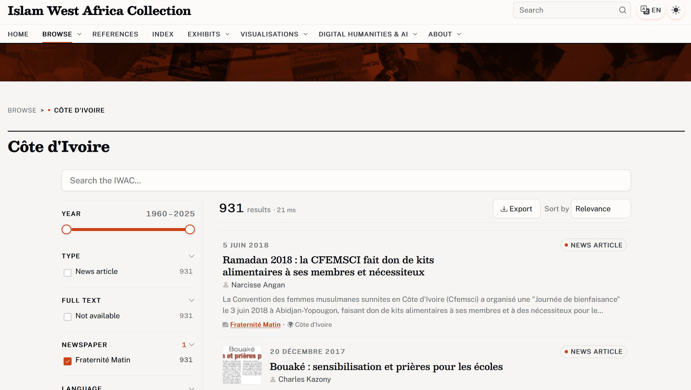
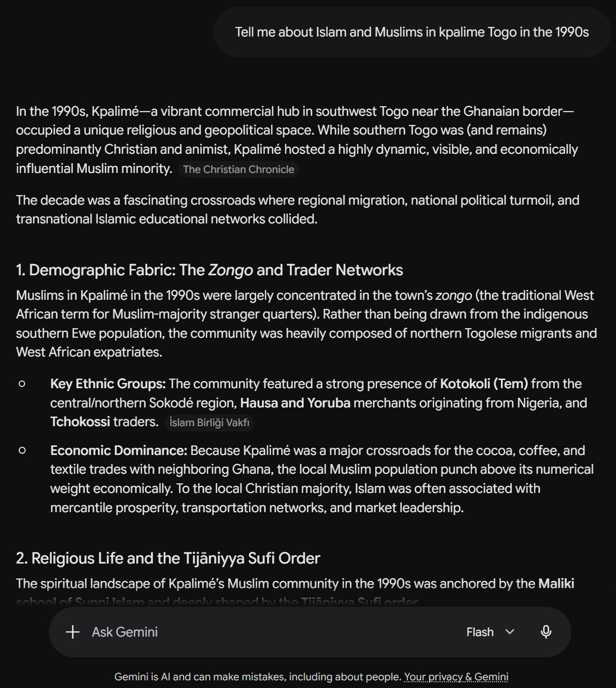
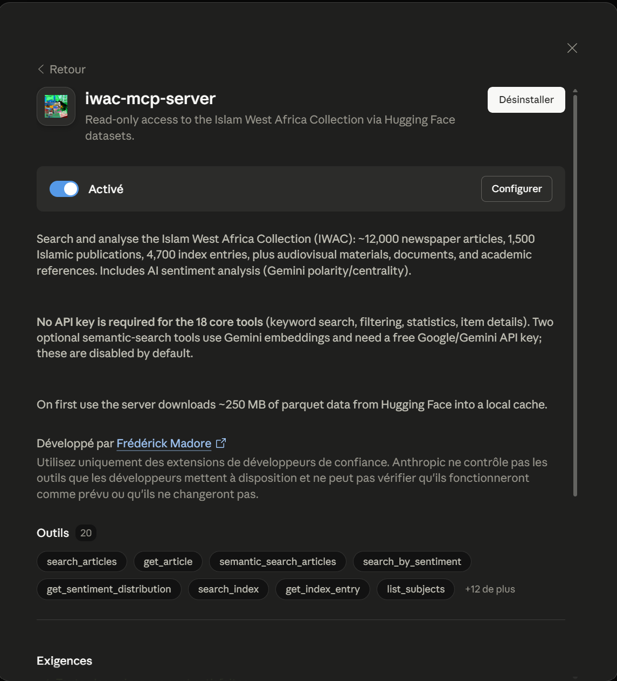
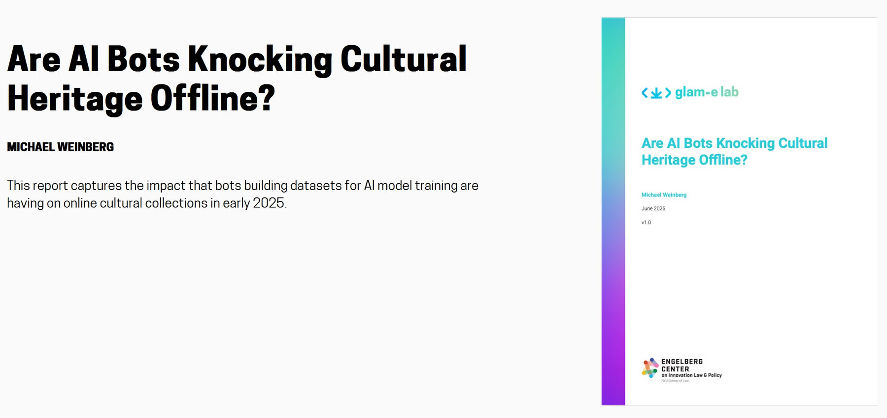

Contents
Eighth Conference on Digital Humanities and Digital History · C²DH, University of Luxembourg
Beyond Keywords
AI-Mediated Access to the Islam West Africa Collection through an MCP Server and Agent Skill
The Islam West Africa Collection (IWAC)
An open archive, built by one historian
Fifteen years of fieldwork and library work — Benin, Burkina Faso, Côte d'Ivoire, Togo — turned into an open-access collection.
- Mostly newspaper clippings and Islamic publications: magazines, brochures, tracts
- Behind it, a personal library of 30,000+ Zotero items
- Online at islam.zmo.de
Six countries · mostly French — also Arabic & Hausa · open access since 2023
The Islam West Africa Collection (IWAC)
An overview of the collection

The "El Hadj" problem
Why keyword search falls short


The faceted search of the IWAC.
Keyword search has built-in problems. I mitigated what I could:
- Spelling variants → authority files merge 20+ forms
- Forming a query → autocomplete and facets guide you
- Polysemy → "hadj" = pilgrimage and the "El Hadj" honorific
Why not just ask AI?
Generic answers, dubious sources


Gemini on Islam in Kpalimé: generic and dubiously sourced. See the chat ↗
- People now ask AI directly, not a search box
- Chatbots often invent citations — worse for Africa, with far less training data
- Web search helps, but the sources are often random
- The IWAC? Crawled by AI bots, yet barely used and badly cited
An approach
Two layers: plumbing and intelligence
Structured, read-only access to the collection that any AI assistant can call.
The methodology for using it well — a historian's method, written down.
Model Context Protocol · open standard, Nov 2024
Why build a server at all?
An MCP server connects an AI assistant to one outside system. Like an app to your accounts:
Retrieval-augmented generation. Proven for GLAM, but it chunks records, and retrieves by a similarity the user never sees.
Ingests nothing. The data stays put; the server holds the logic; the model just asks and answers. modelcontextprotocol.io
Agent skills
What is a skill.md?
A skill is a methods handbook for a machine reader — loaded only when a request matches its purpose.
- Competence gained by reading, with no retraining
- Versioned, reviewed, refined — a prompt is typed once and lost
- An open standard across agents — no vendor lock-in, like MCP
- Born in coding agents — the format fits any domain
my-skill/
├── SKILL.md # Required: metadata + instructions
├── scripts/ # Optional: executable code
├── references/ # Optional: documentation
├── assets/ # Optional: templates, resources
└── ... # Any additional files or directoriesThe standard layout of an agent skill — SKILL.md is the only required file.
What you can ask it
The IWAC MCP server
- "Newspaper articles on Islam in Abidjan, in the 1990s" articlesplace · period
- "Islamic publications on secularism in Togo and Benin" publicationssubject · country
- "Academic references on Muslim women in Burkina Faso" referencessubject · country
One plain-language request; the model picks the tools and combines the filters.
- Read-only: search, full text, authority records, sentiment, stats
- Verifiable: every call a lookup, no AI at query time
- Traceable: every result links to its canonical record
- Two ways in: one-click for Claude Desktop, a hosted URL for ChatGPT
Inside the server · semantic search
Search by meaning, not words
« Islam et laïcité au Burkina Faso »
Plain language — and any language works.
An embedding model (Gemini) maps the text to 768 numbers — one point in a space of meaning.
laïcité → [0.07, -0.12, 0.93, …]Every article was mapped the same way, in advance.
Cosine similarity ranks all 12,000+ articles by how close they sit in that space.
Search the collection · offline demo
Keyword vs. meaning — in the slide itself
Dozens of articles are about secularism but never type the word — schooling, family-code debates, the Arabic press. Keyword search cannot see them. Click By meaning.
None contain the word laïcité — all are about the idea, including the Arabic record keyword search would never reach. · illustrative slice
The IWAC skill in motion
A five-phase research method
Two depths, chosen up front:
- Scoping — what does the collection even hold for this question, before any keyword?
- Systematic searching — French + transliteration variants (Tabaski = Eid al-Adha); log every search, including null results
- Deep reading — full text and sentiment, article by article
- Triangulation — cross-check articles, publications, references, index entries
- Synthesis — findings with source attribution and confidence grades
What a server never could
Discipline, disclosure — and a new role
- Linguistic discipline — search the French corpus in French, whatever language the question is in
- Bias disclosure — every synthesis states the skew: francophone tilt, missing Arabisants, thin Niger and Nigeria
- Evidential discipline — claims tagged primary / secondary / AI-derived; absence of evidence ≠ evidence of absence
The curator's method, in full
iwac-mcp · SKILL.md
---
name: iwac-mcp
description: |
Structured academic research workflow for the Islam West Africa Collection (IWAC) MCP server.
Use this skill when:
- Conducting research queries through the IWAC MCP server (iwac-mcp-server tools)
- Investigating questions about Islam and Muslims in West Africa using IWAC data
- Performing systematic searches across IWAC articles, publications, index, references, or documents
- Analyzing sentiment or temporal patterns in West African press coverage
- Comparing coverage across countries, newspapers, or time periods
- Building structured research outputs with source attribution and confidence grading
This skill provides a five-phase research methodology, search strategy guidance for francophone sources, bias awareness, and documentation conventions. It complements the iwac-data skill (data schemas + Omeka S API).
---
# IWAC MCP Research Workflow
Structured methodology for academic research using the IWAC MCP server's 22 tools (20 core + 2 optional semantic). Adapted from ALA-compliant archival research practices. Applies to server **v0.6.0+** — all matching is accent- and case-insensitive, and result objects use short English keys (`id`, `date`, `polarity`, `centrality`, `subjectivity`, `description_ai`, `url`).
## Prerequisites
Load reference files **as needed**, not all upfront:
1. **references/tools-by-phase.md** — all 22 tools with parameters, defaults, and verified filter vocabularies. Read before the first search of a session.
2. **references/research-domains.md** — French search terms and transliteration variants by domain. Read when crafting search-term variants (Extended mode, or when a Brief search comes back thin).
3. **references/biases-and-limitations.md** — collection biases, coverage gaps, sentiment caveats. Read before writing the synthesis.
4. **references/capabilities-overview.md** — plain-language description of the collection and recommended ways into the data. Read when the user asks what you can do (see "Capability Questions" below).
For data schema and Omeka S API details, defer to the `iwac-data` skill.
## Capability Questions
When the user asks what you can do with IWAC ("what can you do?", "qu'est-ce que tu peux faire ?", "what's in this collection?", "how could I search this?"), do **not** launch the research workflow, present the depth choice, or enumerate the 22 tools. Read **references/capabilities-overview.md** and answer in plain language, in the user's language:
1. One short paragraph on what the collection is and covers.
2. The main ways into the data (keyword, curated themes, people/organizations, semantic, sentiment, periodicals, scholarship) — described as research moves, not tool names.
3. Three to five example research questions, tailored to anything the user has already mentioned.
Close by inviting a research question. Present the Brief/Extended choice only once an actual question is on the table.
## Research Depth
**Before any research, present the user with an explicit choice:**
> How deep should I go?
> - [ ] **Brief** -- Quick overview: article counts, key titles, top actors, plus a close reading of 2-3 key articles.
> - [ ] **Extended** -- Full 5-phase analysis: multiple search variants, full-text reading, sentiment comparison, cross-subset triangulation, confidence grading. Takes considerably more time — and tokens — than Brief.
Do not attach time estimates to the options. Wait for the user to choose before proceeding.
### Brief mode workflow
1. Run Phase 1 scoping (stats, country comparison, relevant subjects) in a single parallel batch — but only the calls the question actually needs. Corpus sizes, country lists, and filter vocabularies are already documented in this skill and tools-by-phase.md; don't spend calls rediscovering them.
2. Run Phase 2 with **one primary search per filter combination** (e.g., subject tag + country + date range). Skip keyword variants and supplementary searches. Use `limit=10` and `with_description=true` so each hit carries its AI abstract.
3. Run a **lightweight Phase 3**: pick the 2-3 most relevant articles (triage on `description_ai`) and call `get_article` to read their OCR text. Skip `get_sentiment_distribution`.
4. Skip Phase 4 (triangulation).
5. Produce a Phase 5 synthesis that draws on both metadata and the articles read. Keep it concise but substantive.
### Extended mode workflow
Follow the full five-phase workflow described below. Use multiple search term variants, read key articles in full, run topic-specific sentiment analysis, and produce a detailed synthesis with confidence grading.
If the user does not specify, **default to Brief mode** and mention that an extended analysis is available.
## Token Budget
Comprehensiveness has a token price — spend deliberately. The goal is a well-evidenced answer, not an exhaustive dump.
- **Brief** should stay around ≤25k tokens of tool output: one scoping batch, a handful of searches at limit 10, 2-3 full articles.
- **Extended** typically lands at 50-120k tokens of tool output. Past that, returns diminish — stop searching and synthesize what you have.
- **Stop rules:** when two consecutive search variants surface no new items, that dimension is saturated — move on. When `total_matches` exceeds ~50, analyze the metadata (counts, dates, newspapers, sentiment) instead of reading items; read only the triaged finalists.
- **Counting ≠ fetching.** `total_matches` and the stats/distribution tools answer "how much / when / what tone" without retrieving rows. Never page through a large result set, and never set limit=100 "just in case".
- **Full text is the expensive part** (`get_article` ≈ 1-7k tokens; `get_publication_fulltext` up to ~7k, plus ~1.6k when the issue has a TOC). Cap full reads at 2-3 (Brief) / 6-8 (Extended), always triaged on `description_ai` first.
- If a question genuinely requires bulk reading (dozens of full articles), say what it will cost and confirm with the user before doing it.
## Critical Search Rules
1. **Articles and publications are French-language sources** — develop keyword terms in French. **References are bilingual** (537 FR / 300 EN): always search them with French AND English terms. Semantic search tools accept queries in any language.
2. **Accents no longer matter for matching** (server ≥ 0.6.0 folds accents and case on both sides): `pelerinage` finds `pèlerinage`, `Bénin` finds `Benin`, `These` finds `Thèse de doctorat`. Still write proper French in outputs.
3. **Country filters take exact names** — `Benin`, `Burkina Faso`, `Côte d'Ivoire`, `Niger`, `Togo` (+ `Nigeria` in references/index/audiovisual only). Partial names ("Burkina") return nothing. Niger no longer over-matches Nigeria.
4. **Know each tool's keyword scope.** Articles: title + OCR + AI abstract. Publications: title + subject + OCR. References: title + abstract, **one term per call** (substring match — "pèlerinage Mecque" as one string misses everything). For curated themes, prefer the `subject` parameter over `keyword`.
5. **Tables of contents now cover part of the publications corpus** (verified June 2026): 325/1,501 issues (~22%) have a TOC + embedding — complete for 17 of the 25 series (the smaller magazines: Le Rendez-Vous, Plume Libre, L'Appel, Alif, La Preuve, An-Nasr Trimestriel, Le CERFIste…), but absent for the three largest (Islam Info 695 issues, An-Nasr Vendredi 318, Islam Hebdo 122). `search_publications` keyword also matches TOCs and returns the matching entries as `matching_toc_entries`; `semantic_search_publications` is genuinely useful for the TOC-covered series. For the big three series, navigate via `list_periodicals`, `subject` (87% tagged), country, and year; use OCR `keyword` for content, and `get_publication_fulltext` (capped keyword excerpts) to read inside one long issue.
6. **Triage on AI abstracts before reading OCR.** `search_articles(with_description=true, limit≤10)` returns each article's ~500-char `description_ai` — usually enough to pick the 2-3 articles worth a full `get_article` (~1k tokens each).
7. **Niger and Nigeria are dramatically underrepresented.** Always disclose this in cross-country comparisons (see biases-and-limitations.md §2).
## The Five-Phase Workflow
### Phase 1 -- Scoping
**Goal:** Establish what IWAC contains for the research question and identify coverage boundaries.
**Actions:**
1. Use `get_collection_stats` to understand overall scale (articles, publications, index entries)
2. Use `get_country_comparison` to assess geographic coverage relevant to the question
3. Use `get_newspaper_stats` with country filter to identify which newspapers cover the topic
4. Use `list_subjects` to discover relevant subject terms; `list_periodicals` if Islamic publications are in scope
5. Identify which subsets are relevant: articles (press), publications (Islamic media), references (scholarship), documents (association papers), index (authority records)
**Constraint:** Keep `limit` low (5-10) during scoping to save tokens. Use brief queries first, then drill down.
### Phase 2 -- Systematic Search
**Goal:** Map the search space using structured queries, building a record of what exists and what is absent.
**Actions:**
1. Develop search terms in French (primary) with transliteration variants for Arabic/Islamic terminology
2. Search incrementally -- one term or filter combination at a time
3. Use `search_articles` with keyword, country, newspaper, subject, and date range filters. Results include Gemini sentiment (`polarity`, `centrality`, `subjectivity`) inline; add `with_description=true` for AI abstracts.
4. Use `semantic_search_articles` (if enabled) for conceptual or thematic queries where exact keywords may miss relevant articles -- queries can be in any language. Use alongside keyword search, not as a replacement.
5. Use `search_index` to find persons, organizations, places, and events; note the canonical form, then search articles with it
6. Use `search_by_sentiment` for specific polarity/centrality patterns (supports `subject` for topic-specific slices)
7. Use `search_publications` (series/subject/country/year filters; keyword matches title + subject + TOC + OCR, with TOC hits returned as `matching_toc_entries`) for Islamic community media; `semantic_search_publications` (if enabled) works for the 17 TOC-covered series
8. Use `search_references` for academic literature -- French AND English terms, one keyword per call; drill into promising hits with `get_reference` (full abstract, 51% have one)
9. Use `search_documents` when grassroots/association sources could matter (26 items, mostly Burkina Faso)
10. **Record every search and its result count**, including zero-result searches -- null results constrain interpretation
11. Use `date_from`/`date_to` for temporal filtering -- articles take `YYYY-MM-DD` or `YYYY` (day precision); publications and references take years
**Constraint:** Substring matching only -- no wildcards, fuzzy, or Boolean operators. Accent/case differences are handled by the server.
### Phase 3 -- Deep Reading
**Goal:** Examine individual items in detail for high-value hits.
**Actions:**
1. Use `get_article` for full article detail: metadata, `description_ai`, sentiment, OCR text (capped at 25k chars)
2. Use `get_reference` for the full scholarly abstract and host-work details
3. Use `get_publication_fulltext` with a `keyword` for capped excerpts inside a long issue (`match_count` tells you the total; `excerpts_returned` what you got)
4. Use `get_index_entry` / `get_document` for authority records and archival documents
5. Cross-reference article subjects and spatial fields with index entries
6. Note the IWAC URL for each item to enable verification against the original source
**Constraint:** Triage on `description_ai` first; request full OCR only for the finalists.
### Phase 4 -- Triangulation
**Goal:** Verify findings against multiple evidence types and identify gaps.
**Actions:**
1. Cross-reference MCP findings across subsets (articles vs. publications vs. references vs. documents vs. index)
2. Use `get_sentiment_distribution` with `subject` filter to compare topic-specific sentiment against the collection baseline (e.g., `subject="Laïcité", country="Burkina Faso"` vs. the whole BF corpus)
3. Use `search_articles` results (which include sentiment inline) to build topic-specific sentiment tables without extra calls
4. Flag coverage gaps: which countries, time periods, or languages are underrepresented for this question?
### Phase 5 -- Synthesis
**Goal:** Produce structured findings with explicit source attribution and confidence grading.
**Actions:**
1. Tag every claim with its **source type**: MCP article, MCP index, MCP publication, MCP reference, MCP document, MCP sentiment analysis, external source
2. Tag every claim with its **evidence strength** using the three-tier scale below
3. Document null results alongside positive findings
4. Separate primary evidence (articles, publications, documents) from secondary evidence (references, index metadata) from AI-derived evidence (sentiment, description_ai)
5. Note any limitations specific to the research question (see biases-and-limitations.md)
6. **Offer follow-up questions.** End every synthesis with 2-4 concrete follow-up research questions the user could explore next. These should branch naturally from the findings -- e.g., drilling into a specific actor, comparing with another country, examining a different time period, or exploring a related theme the data surfaced. Frame them as actionable prompts the user can pick up directly.
## Confidence Grading
| Grade | Meaning | IWAC Example |
|-------|---------|-------------|
| **Strong** | Direct attestation in multiple primary sources | Article OCR text names a person/event, corroborated by index entry and other articles |
| **Moderate** | Supported by clear but indirect evidence | Sentiment trend across multiple articles suggests a pattern; single article attestation |
| **Weak** | Inferred from limited evidence or argument from silence | Subject absent from coverage (may reflect collection gaps, not historical absence) |
## Documentation Conventions
**For MCP article citations:** Item ID, title, newspaper, date, country, IWAC URL. Example: `#5736, "La communauté musulmane célèbre le Maouloud", Togo-Presse, 2005-04-23, Togo, https://islam.zmo.de/s/westafrica/item/5736`
**For MCP index citations:** Entry ID, title, type, frequency. Example: `Index #1234, "CERFI", Organisation, frequency: 45`
**For null results:** `Search for [term] in [tool] with [parameters] returned 0 results.`
**For AI sentiment findings:** All sentiment data uses Gemini; the result keys are `polarity`, `centrality`, `subjectivity`. When comparing topics or countries, use `get_sentiment_distribution` with `subject` filter for aggregate data, or tabulate the sentiment columns from `search_articles` results.
## Arabic-Islamic Transliteration Variants
Account for French transliterations when searching:
- Mawlid = Maouloud, Maoulid, Mouloud
- Sharia = charia, chari'a
- Eid al-Adha = Tabaski, Aïd el-Kébir
- Eid al-Fitr = Aïd el-Fitr, Korité
See **references/research-domains.md** for comprehensive term lists by domain.
## Key Constraints
1. **Never present search results as exhaustive.** IWAC is a curated collection, not a complete archive. Absence of evidence is not evidence of absence.
2. **Always disclose the francophone bias.** ~96% French-language sources specifically reflect Western-educated Muslim perspectives (those who followed French-speaking, secular, or Christian school curricula). *Arabisants* -- leaders trained in madrasas who use Arabic or national languages -- are underrepresented as direct voices, though the French press regularly reports on their activities.
3. **Always disclose the Niger/Nigeria gap.** Niger has thin coverage (one newspaper, 2018+) with inconsistent subject tagging. Nigeria has no press articles at all (audiovisual only). These gaps must be stated in any cross-country analysis.
4. **Always distinguish source types.** MCP tool outputs, AI sentiment labels, AI abstracts (`description_ai`), and OCR text have different evidential status.
5. **AI sentiment is interpretive, not factual.** Gemini sentiment labels are analytical signals, not ground truth. Use topic-specific sentiment (via `subject` filter) rather than whole-corpus baselines when comparing themes.
6. **Search incrementally.** Keep limits low, search one dimension at a time, avoid retrieving full OCR text unless needed.
7. **Publications are mostly entire issues.** Individual articles within an issue are not separated; use the table of contents where one exists (17 of 25 series) and `get_publication_fulltext` keyword excerpts to localise content inside an issue.
8. **Mind the 1990-91 press-system break.** Pre-1991 articles (~11% of the corpus) come almost entirely from state or single-party organs; the private press only emerges with political liberalisation. Temporal comparisons crossing 1990 compare two different press systems (see biases-and-limitations.md §6).
Live demo
From a plain question to cited sources


Installed as a Claude Desktop extension — read-only, no API key for the core tools.
One real question, and the skill runs the method live.
- Scopes the collection, then searches it in French
- Reads the strongest hits in full
- Answers with every claim linked to its IWAC record
Saved run · secularism in Côte d'Ivoire
Brief — the default depth

Claude Sonnet 4.6 · high effort
Saved run · Islam in Kpalimé, Togo
Extended — the full method

The same question we put to Gemini earlier, now answered from the IWAC.
The stakes
Whose infrastructure? African collections and AI extraction


39 of 43 heritage institutions hit by AI-bot traffic spikes (Weinberg, GLAM-E Lab, 2025); Wikimedia: 65% of its costliest traffic is bots. Read it ↗
- The default is extraction — public institutions and open-access labour subsidising commercial AI
- MCP, a third path — the collection stays put; the institution decides what the AI sees
Conclusion
A new way in for a wider public — but no replacement for archival research. It finds what you ask for, not what you weren’t looking for: the unexpected find that slow reading turns up.
Try it: connect Claude or ChatGPT to the collection — how-to on the IWAC AI-access page.
Next: a small open-source model on the server itself, answering on the website — no install, no account. github.com/fmadore/iwac-mcp-server